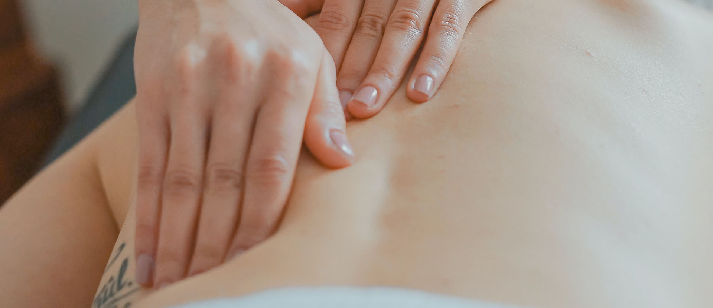
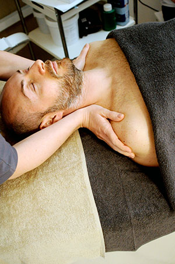

Kraniosakral terapi
Boka
Lider du av stress eller har värk i nacke och rygg?
Vill du få en mycket skonsam, lyhörd och effektiv behandling som är djupt avslappnande?
Då är Kraniosakral behandling någonting för dig!
Nu kan jag erbjuda dig en elevbehandling och därför ett mycket förmånligt pris, i lugn hemmamiljö och med full fokus och närvaro på bara dig!
Behandling kommer att erbjudas varje måndag från och med vecka 37. Med start 9 september 2019. Vid frågor och bokning ring 0702- eller via e-post cristina.styren@gmail.com
Varmt välkommen önskar blivande diplomerad Kraniosakral terapeut, Cristina Styrén
Elevbehandlingar i Kraniosakral terapi
Jag erbjuder elevbehandlingar till reducerat pris, från och med den 9 april 2020 i Kraniosakral terapi, då jag är under utbildning till kraniosakral terapeut. Behandling kommer erbjudas varje måndag under våren 2020 till och med vintern 2020.
Jag går min utbildning hos Bröderna Tranberg, världsledande inom detta område. Jag är medlem i Kraniosakrala terapeutförbundet (KSTF) och följer branschens etiska regler och är ansvarsförsäkrad.